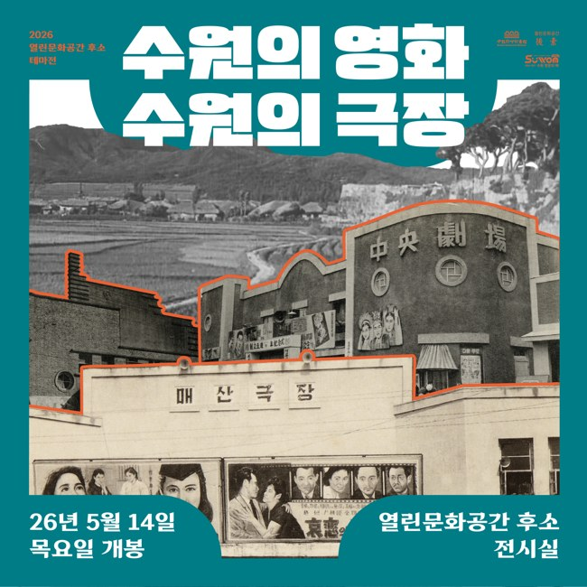
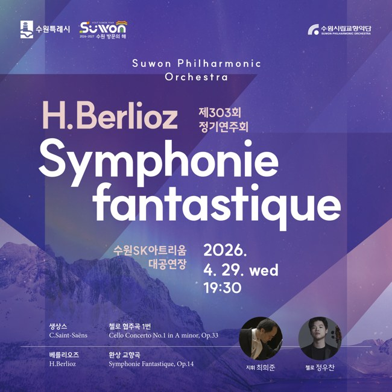

전시 · NEW004수원의 영화, 수원의 극장전시명·개막일·장소와 사진 콜라주를 함께 확인하는 정사각형 포스터3000 × 3000 px · 4개 문구 조건 · 2개 시각 조건기준문서 PDF ↗수정용 MD포스터 원본
연주회 · NEW043수원시립교향악단 제303회 정기연주회회차·공연 일시·장소·출연자·외국어 작품명이 함께 있는 정사각형 포스터4500 × 4500 px · 6개 문구 조건 · 2개 시각 조건기준문서 PDF ↗수정용 MD포스터 원본
축제 · NEW0722025 탄소중립 한마당 축제 오늘무해! FESTIVAL행사명·운영 시간대·프로그램·교통 안내와 일러스트가 있는 세로 포스터2382 × 3368 px · 8개 문구 조건 · 2개 시각 조건기준문서 PDF ↗수정용 MD포스터 원본